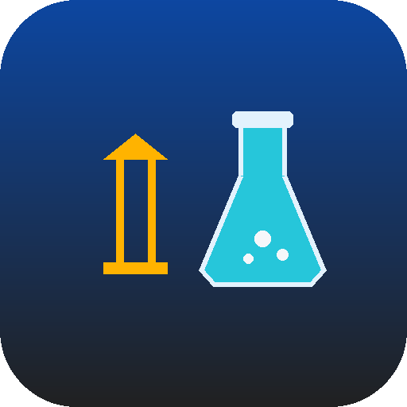

0 of 10 simulations completed
Every simulation includes an adaptive mini quiz. Jump straight to any quiz below.
An interactive, simplified reference to key constitutional concepts. Tap a topic to expand it.
The Virtual Political Science Laboratory is an offline, installable civic-education app built around ten interactive simulations, an adaptive mini quiz for each, a Constitution Handbook, an illustrated Glossary, and an Achievements system — designed to help students experience democracy and governance rather than just read about them, in line with NEP 2020's emphasis on competency-based, experiential learning.